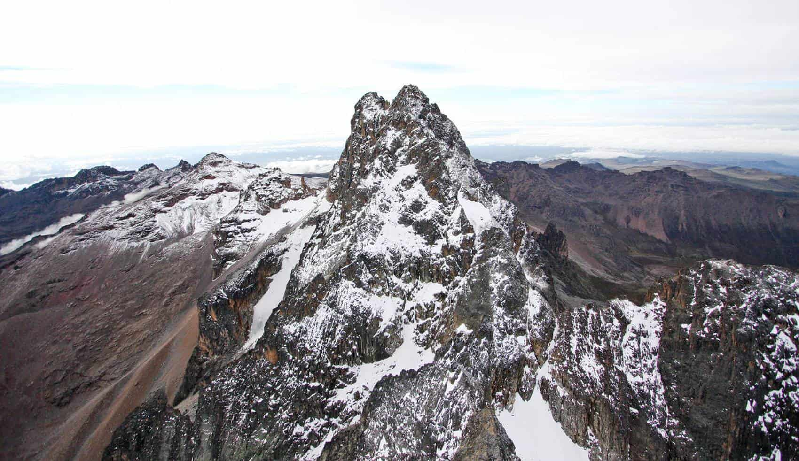

Mount Kenya is Africa's second highest mountain and one of the continent's most spectacular and diverse wilderness areas. Rising to 5,199 metres at its highest point (Batian Peak), Mount Kenya is a UNESCO World Heritage Site and a Biosphere Reserve — a place of extraordinary ecological richness where rainforest gives way to bamboo, then to heather moorland, then to the surreal Afro-alpine zone of giant lobelias and groundsels, and finally to the glaciated peaks above 4,500 metres.
This 5-day adventure takes you to Point Lenana (4,985m) — the highest point accessible to trekkers without technical climbing equipment, and one of the most rewarding high-altitude hikes in Africa. The route ascends through four completely different ecological zones, passing glacial tarns, dramatic rock formations, and unique high-altitude wildlife including the rare Mount Kenya rock hyrax and the spectacular sunbird species that feed on giant lobelia flowers. No technical climbing experience is required — just a reasonable level of fitness and a sense of adventure.
Depart Nairobi at 7:00am by road to Naro Moru on the western slopes of Mount Kenya (approx. 3 hours). After breakfast at the base camp lodge, begin trekking from the Naro Moru Gate (2,400m) through the mountain's magnificent rainforest zone — giant cedar and podocarpus trees draped in moss, colobus monkeys crashing through the canopy, buffalo trails winding through the undergrowth. Ascend to the Met Station (3,050m) for overnight. Dinner and briefing on altitude acclimatisation.
Trek through the heather and moorland zone — a dramatic landscape of giant heather trees, tussock grass, and the first sightings of giant lobelia plants towering 3–4 metres above the moorland. Cross the famous "Vertical Bog" — a section of deep peat moorland that requires careful navigation. Arrive at Mackinder's Camp (4,300m) in the heart of the alpine zone, surrounded by dramatic rock peaks and glacial tarns. Rest and acclimatise. Early dinner and bed at 7pm — summit day starts at midnight.
Wake at midnight. Begin the summit push at 1:00am by headtorch — a 3–4 hour ascent through scree and rock to Point Lenana (4,985m), timed to arrive at the summit for sunrise. Standing on the roof of Kenya as the sun rises over the Indian Ocean and the glaciers of Batian and Nelion glow gold above you is one of the most extraordinary experiences in East Africa. Descend back to Mackinder's Camp for breakfast, then continue descending to Meru Mount Kenya Lodge (2,600m) via the Chogoria route — passing the spectacular Gorges Valley and Lake Ellis.
Leisurely morning descent through the Chogoria Forest — the most beautiful forest section on Mount Kenya, with giant fig trees, clear mountain streams, and abundant birdlife including the rare Hartlaub's turaco. Arrive at Chogoria Gate and transfer to your lodge for a well-earned rest, hot shower, and celebratory dinner. Optional afternoon visit to the nearby Meru National Park for a game drive (additional cost).
Leisurely morning at the lodge — final views of Mount Kenya's peaks from the foothills. Depart for Nairobi by road (approx. 3.5 hours via Embu). Arrive Nairobi by early afternoon. Certificate of ascent presented to all trekkers who reached Point Lenana.